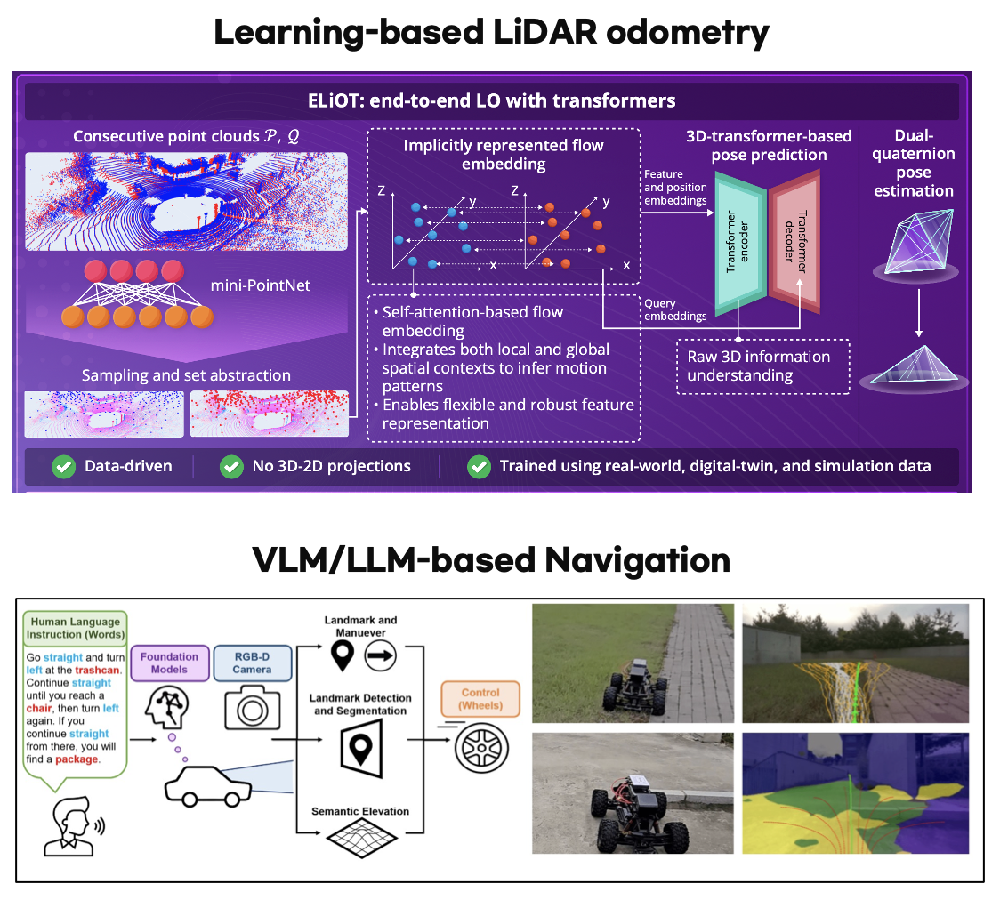

Research Areas
We conduct research on intelligent robotic systems for defense, focusing on Spatial AI, Autonomous Systems, and RL-based Adaptive Control. Our lab is dedicated to bridging cutting-edge AI with real-world defense and aerospace challenges.
RL-based Adaptive Control
Fault-Tolerant Control
- RL-based Recovery from Actuator/Sensor Failures
- Adaptive Control under Partial System Loss
- Resilient Flight & Locomotion Control
Cross-Morphology Adaptation
- Generalized RL Policy for Heterogeneous Robots
- Drones, Legged Robots & Wheeled Platforms
- Sim-to-Real Transfer across Robot Configurations
Spatial AI

Spatial Perception & Understanding
- 3D Scene Reconstruction & Understanding
- SLAM & State Estimation
- Multi-modal Sensor Fusion
Learning-based Navigation
- Deep RL for Autonomous Navigation
- High-Speed & Competitive Driving
- Real-world Field Evaluation
Autonomous Systems

Advanced Air Mobility (AAM)
- eVTOL Path Planning & Control
- Urban Air Traffic Management
- Defense UAV Operations
유무인 복합 체계 (MUM-T)
- Manned-Unmanned Teaming
- Cooperative Multi-Robot Systems
- Heterogeneous Robot Coordination